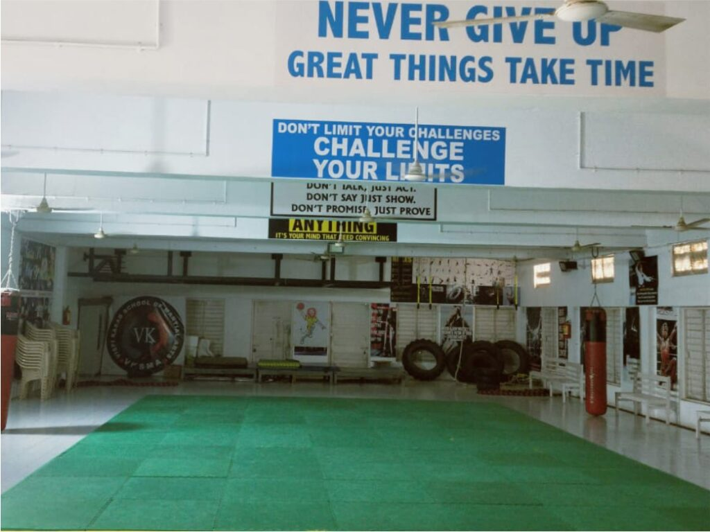
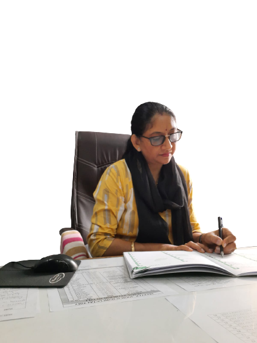

Primary Section
Standards I to VIII — the eight years where reading, arithmetic and study habits are settled for life.
Welcome
Teaching that leans on experience, not turnover
The school has managed to achieve the success it has had because of its carefully recruited teaching team and its focus on technology. Extensive training is given to all teachers, and the use of technology in teaching is strongly emphasised.
Our Primary section is staffed by 53 teachers. Many of them joined Vidyakunj in the 1990s and early 2000s and have taught here ever since — the same teacher often sees a family’s second and third child through the same classroom.
Students are encouraged to take part in activities beyond the normal school day, and are given a choice from a wide variety of hobbies. A comprehensive curriculum ensures an enriching experience.


What is taught
Subjects across the Primary years
English is the medium of instruction throughout. Gujarati, Hindi and Sanskrit are taught alongside it, so children leave Standard VIII comfortable in four languages.
Languages
English, Gujarati, Hindi and Sanskrit — taught by subject specialists rather than by a single class teacher.
Mathematics & Science
Maths and EVS in the early years, moving into formal Science as students approach Standard VIII.
Social Science
History, geography and civics, taught in English with Gujarat-board continuity in mind.
Computer
Computer education as a regular timetabled subject, not an optional extra.
Drawing & Craft
Art, craft and drawing taught by dedicated teachers, with work shown at school functions.
Physical Training
P.T. on the school playground, plus sports day and inter-house competitions.
Our goal is for every student to reach his or her developmental potential; not just academically, but socially and emotionally as well. We emphasised the importance of each individual child, allowing the child to achieve maximum potential, no matter what the background.
There is nothing that cannot be achieved if there is synergy in the team — curious children ever-willing to learn, concerned parents who support our ventures, diligent staff who go beyond their call of duty and who are safety conscious. Each of them complements the other, bringing goals to fruition.
The connection between home and school is an essential component in laying the foundation for our youngest learners and all their educational experiences that lie ahead. A positive partnership builds children’s confidence and encourages them to see learning as both enjoyable and purposeful. I encourage you to play an active role in your child’s education.

Fees for Standards III to VIII are published
₹19,900 for the full academic year, in two terms, with no hidden activity charges. The complete fee policy is on the admissions page.